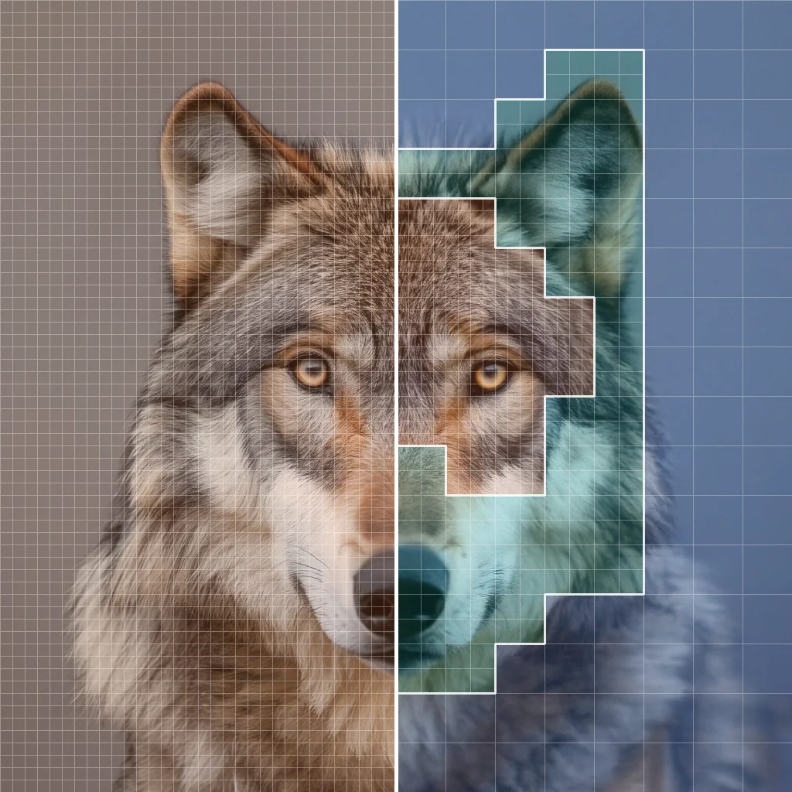
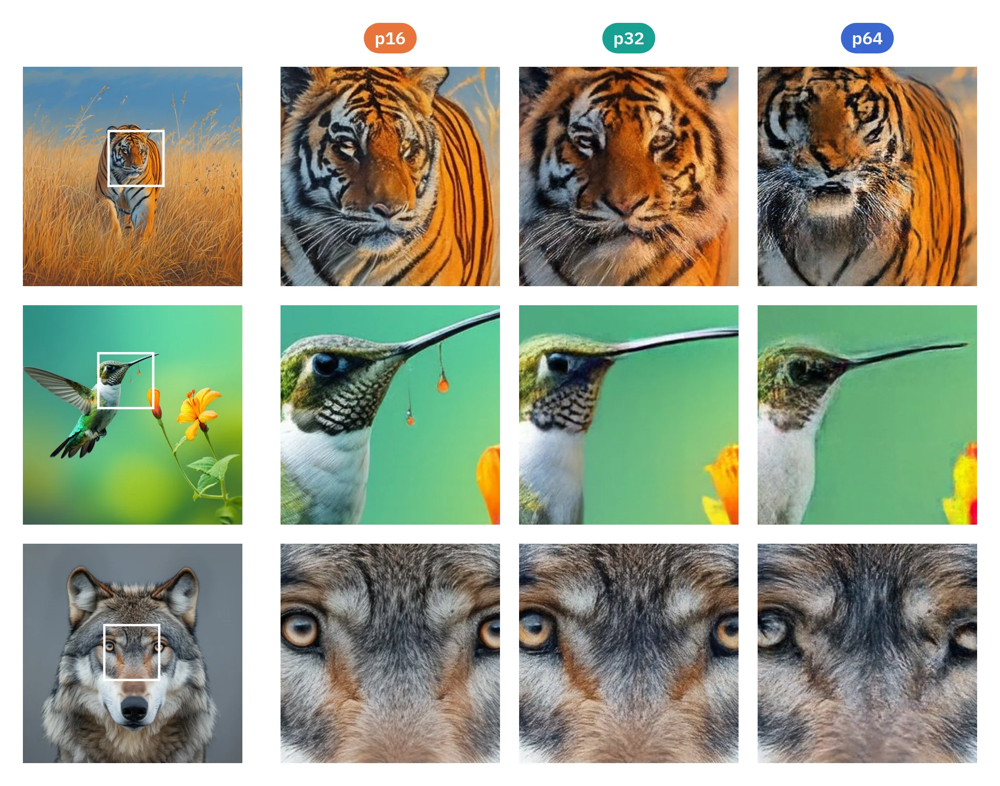
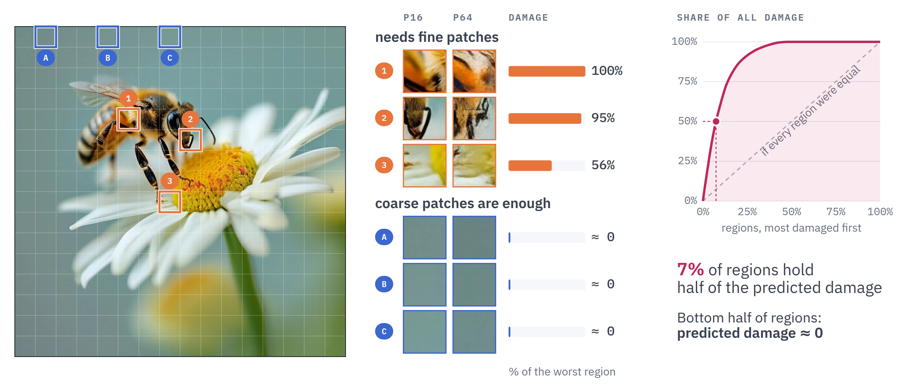
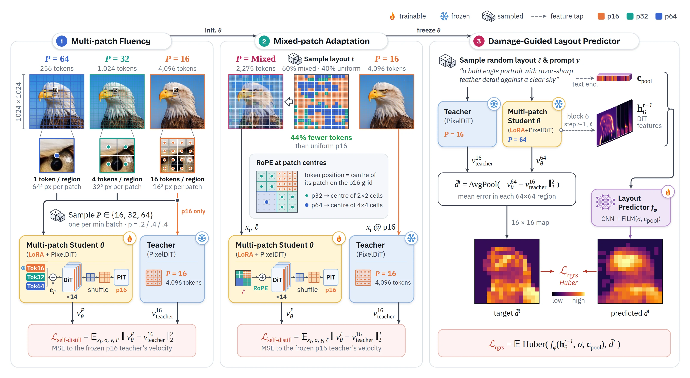

MOSAIK Multi-Patch Content-Aware Spatial Allocation of Image Tokens for Efficient Generation
Huawei Technologies Canada *Equal contribution
mohammadreza.hami@h-partners.com · {mohammadreza.samadi1, chao.gao4, negar.hassanpour2}@huawei.com
Abstract
Pixel-space diffusion models avoid the reconstruction ceiling of latent diffusion models by generating directly in image space. However, their substantially higher token count makes generation expensive due to the quadratic complexity of self-attention. Several existing efficiency methods reduce this cost by using larger patches at selected denoising steps, thereby representing the image with fewer tokens. Yet, each step still uses a single patch size uniformly across the entire image, overlooking that different regions suffer different fidelity losses when coarsened.
We introduce MOSAIK, a damage-guided framework that varies patch size across regions and denoising steps. MOSAIK adapts the PixelDiT backbone to generate arbitrary heterogeneous patch layouts, and a lightweight predictor uses intermediate denoising features to estimate the fidelity loss caused by coarsening each region. Given a token budget, our damage-guided layout predictor assigns fine patches to sensitive regions and coarse patches elsewhere. Remarkably, while reducing FLOPs by 70% and token count by 83%, MOSAIK matches the full-compute PixelDiT on GenEval and its DPG-Bench score drops by only 1.0 point. Compared to diverse efficiency paradigms, including temporal patch scheduling and feature caching, our approach delivers highly competitive performance at moderate budgets and consistently outperforms these baselines in highly constrained compute regimes.

Uniform p16 · 4,096 tokens MOSAIK · 1,024 tokensMotivation
Bigger patches save compute but can lose detail
Each step from p16 to p32 to p64 cuts the tokens by 4×. Applied to the whole image, larger patches can discard local structure and sharp boundaries: our model run at uniform p64 scores 0.65 GenEval (0.73 at uniform p16; PixelDiT 0.74).

Regions differ in how much coarsening hurts
In this image, coarsening would damage the bee and barely touch the flat background, yet a uniform patch size pays the same for both.

Method
One backbone for any layout, one predictor for where detail goes
A 1024² image has 256 regions of 64×64 pixels, each tokenized as p16, p32 or p64 (16, 4 or 1 tokens). Two stages adapt PixelDiT to any layout; a third trains a separate layout predictor.

Inference: spend the budget where the damage is
Step 1 runs at full p16. From step 2 on, the predictor reads the previous step's features and predicts the damage drt of every region r. A greedy rule starts every region at p64 and applies the highest-priority refinement that still fits the token budget: p64→p32 costs 3 tokens with priority drt/3, p32→p16 costs 12 tokens with priority drt/12. Any budget works without retraining.
![Inference on the tiger prompt at step 25. The layout predictor takes the prompt embedding, the noise level and block-6 features from the previous step and predicts a 16 by 16 damage map. Greedy allocation at a budget of 1,024 tokens starts all regions at p64 and applies p64 to p32 (plus 3 tokens, priority d over 3) and p32 to p16 (plus 12 tokens, priority d over 12) refinements best-first while they fit. The resulting layout covers 19 percent of the image with p16, 6 percent with p32 and 75 percent with p64.](static/img/fig_infer_m.webp)
Layouts in action
The layout is re-planned at every step
Play or scrub the 50 steps. The image is the model's running estimate of the final image (x̂0). Step 1 is a full p16 warm-up. In the last steps p16 drops out: with a 1,024-token budget the final two steps are uniform p32; with 614 tokens the layout settles into a p32/p64 mix.
One model, any budget
Drag the budget: the same predicted damage map, allocated at any token budget, with no retraining.
Results
Full-compute GenEval at ≈70% fewer FLOPs
Compared with temporal patch scheduling (DDiT), which also saves compute with larger patches but uses one patch size for the whole image at each step, at four matched compute tiers.
- MOSAIK
- DDiT
- PixelDiT, full compute
| Method | ≈20% FLOPs saved | ≈50% | ≈60% | ≈70% | ||||
|---|---|---|---|---|---|---|---|---|
| DPG | GenEval | DPG | GenEval | DPG | GenEval | DPG | GenEval | |
| PixelDiT, full compute n = 50 | DPG 83.5 · GenEval 0.74 | |||||||
| Fewer steps n = 38 / 24 / 19 / 16 | 83.3 | 0.70 | 82.5 | 0.67 | 81.5 | 0.65 | 80.6 | 0.64 |
| TeaCache | 83.5 | 0.72 | 83.5 | 0.72 | 82.8 | 0.71 | 82.6 | 0.71 |
| TaylorSeer | 83.7 | 0.71 | 83.6 | 0.71 | 82.7 | 0.68 | 82.4 | 0.68 |
| DDiT | 83.1 | 0.69 | 81.6 | 0.65 | 81.5 | 0.65 | 80.8 | 0.64 |
| MOSAIK (ours) | 83.6 | 0.74 | 83.4 | 0.74 | 83.1 | 0.74 | 82.5 | 0.74 |
| MOSAIK tokens saved | 25% | 59% | 74% | 83% | ||||
Same prompt and seed at ≈60% fewer FLOPs
Compare with full compute
Drag the divider. The budget applies to MOSAIK's steps 2–50 (step 1 runs at full p16); PixelDiT uses 4,096 tokens at every step. Same seed.
Placement is the gain
Same model, same token budget, only the layout differs: damage-guided layouts beat random ones at every tier.
MOSAIK composes with caching
Caching saves compute across time, MOSAIK across space. Together they keep GenEval at 0.73 even at ≈80% fewer FLOPs.
| ≈70% FLOPs saved | ≈80% FLOPs saved | |
|---|---|---|
| TeaCache | 0.71 → 0.74DPG 82.6 → 82.8 | 0.67 → 0.73DPG 80.7 → 82.2 |
| TaylorSeer | 0.68 → 0.74DPG 82.4 → 82.8 | 0.43 → 0.73DPG 72.9 → 82.2 |
GenEval, caching alone → caching + MOSAIK.
The savings hold on hardware
At the ≈70% tier on one NVIDIA GB10, the DiT blocks run 5.40× faster; the fixed pixel decoder and text stream set a 4.4 s floor.